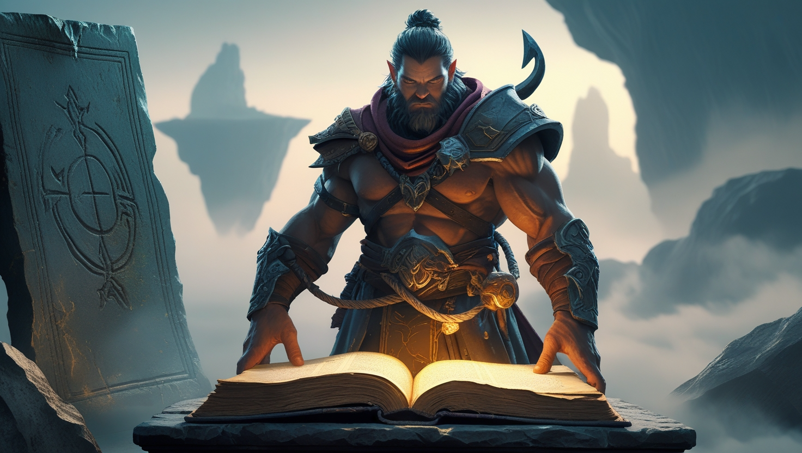

Jake Amca’nın Gizemine Yolculuk
Giriş
Glory of Hook, Jake Amca’yı arayan bir kahramanın hikayesini anlatır. Bu mucit, söylentilere göre uçan adaları gökyüzünde tutan Moontrap’a takıntılıydı. Jake Amca, Moontrap’ın dünyayı kurtarmanın anahtarı olduğuna inanıyordu ve geride sadece kancalı eski bir kıyafet bıraktı. Onu giyen kahraman, Moontrap’ın efsane haline geldiği inanılmaz bir yere ulaşır. Mağaralar ve harabeler onun izlerini taşır, yerliler ise gücünden fısıldaşır. Jake Amca, Moontrap’ı bulmaya çalışırken kayboldu ve şimdi onun başına neler geldiğini öğrenmek size düşüyor. Bu araç, bir eserden fazlasıdır; hikayenin her yanını sarar.
Kahramanın Yolculuğu
Her şey Jake Amca hakkındaki çocukluk anılarıyla başlar. O, Moontrap’tan bir mucize gibi bahsederdi. Büyüyünce kahraman kıyafeti bulur ve Moontrap’ın gerçek olduğu bir dünyaya taşınır. Yol sınavlarla doludur, ancak her adım çözüme yaklaştırır. Jake Amca, Moontrap ve ışığından bahseden notlar bıraktı. Kahraman ilerlerken bu aracın geçmişin anahtarı olduğunu hisseder. Mağara duvarlarında Moontrap’ın sembolleri kazınmıştır ve her biri onun gizemli özünü yansıtır. Kahramanın rüyalarında Moontrap, ileriye çağıran bir ses olarak belirir. Moontrap’ın sadece enerjiyle değil, kaderle de bağlantılı olduğunu hisseder.
Oyun Dünyası
Uçan adalar, Glory of Hook’un kalbidir. Onlar, Moontrap denen eski bir araç sayesinde varlığını sürdürür. Kurbağa-insan benzeri yerliler, onun ay ışığını yakalayarak topraklarını ayakta tuttuğuna inanır. Ancak gücü azalıyor ve dünya çöküyor. Jake Amca, Moontrap’ı kurtarmak için aradı ve harabelerde ipuçları bıraktı. Mağaralar, Moontrap’ı yansıtan kristallerle doludur ve rüzgar onun adını fısıldar. Bu araç, çözülmesi gereken bir bilmecedir.
Yerel kronikler, Moontrap’ın ilk yerleşimlerden çok önce var olduğunu söyler. Enerjisi dengeyi korur, ancak Moontrap kaybolursa adalar düşer. Arşivlerde, bulut girdabıyla çevrili Moontrap tapınağına işaret eden haritalar saklıdır. Yalnızca Moontrap’ın çağrısını duyabilen bir kahraman oraya ulaşabilir. Her adım, Moontrap’ın gerçeğini ve dünyadaki rolünü açığa çıkarmaya yaklaştırır.
Son Gizem
Jake Amca, Moontrap’ın saklandığı yere ulaştı. Son notları endişe doluydu: aracı buldu ama geri dönmedi. Kahraman onun peşinden gider, uçurumları aşar ve Moontrap’ı sunak üzerinde süzülürken görür. Bu cihaz cevaplar vaat eder, ama ışığı kör edicidir. Jake Amca’ya ne yaptı? Moontrap kurtuluş mu, yoksa tuzak mı? Seçim sizin: onu almak ya da bırakmak.
Yakında gizli bir salon bulunur; duvarları Moontrap’ın farklı çağlardaki ve biçimlerdeki çizimleriyle kaplıdır. Kahraman geçmişin adım seslerinin yankısını duyar ve fark eder: Moontrap sadece bir teknoloji değil, dünyanın yaşayan bir parçasıdır. Belki Jake Amca, Moontrap’ı kontrol edemeyeceğini anladı. Belki onun bir parçası oldu. Ve şimdi Moontrap yeni bir arayıcıya bakıyor. Bu an, yolculuğun doruk noktasıdır.
Yerlilerin Efsaneleri
Yerel halk kendilerine Uçan Yolların Muhafızları der. Moontrap’ı atalarının bir hediyesi olarak anlatırlar. Onlara göre bu araç dünyayı ayakta tutar, ama gücü zayıflıyor. Jake Amca onlarla konuşmuş, Moontrap’ı inceleyerek yardım vaat etmişti. Şimdi Moontrap’ı bulacak ve umudu geri getirecek bir kahramanı bekliyorlar.
Bazı Muhafızlar, Moontrap’ın bir bilince sahip olduğuna ve kimin ona yaklaşabileceğini seçtiğine inanır. Moontrap’ın yeni adalar yarattığı ya da eskileri yok ettiği efsaneleri aktarırlar. Şarkıları Moontrap’a adanmıştır ve her ritüel, onunla bağı güçlendirme çabasıdır. Kahraman, bu insanların Moontrap’a duyduğu saygıyı hisseder ve bu, onu sadece aramakla yetinmeyip anlamaya iter.
Kamp Ateşi Düşünceleri
Son gecede kahraman kamp ateşinin başında oturur ve gökyüzüne bakar. Düşünceler yine Moontrap’a döner. Jake Amca’dan ilk kez bu kelimeyi duyduğunu hatırlar. O zamanlar bu bir masaldı. Şimdi ise Moontrap her şeyin merkezinde. Onu rüyalarında, suyun yansımasında, ateşte, insanların seslerinde görür. Moontrap’tan her bahsedildiğinde kalbi更快 атıyor. Moontrap’ın onu değiştirdiğini hisseder. Belki de farklı biri oldu, çünkü bu hikayeden kimse Moontrap’tan geçmeden çıkamaz.
Moontrap’ın ışığını uçan adalar boyunca takip edin. Uçurumları aşmak ve Moontrap’ın izlerini bıraktığı yerlere ulaşmak için kancayı kullanın. Her konum, sizi Jake Amca’nın gizemine ve Moontrap’ın gücüne bir adım daha yaklaştırır.
Dünyaya dağılmış Jake Amca’nın Moontrap hakkındaki notlarını inceleyin. Bunlar, bu aracın doğasını ve uçan adalar üzerindeki etkisini anlamanın anahtarlarını içerir. Moontrap sadece bir eser değil, bu dünyanın yaşayan bir efsanesidir.
Moontrap hakkında daha fazla bilgi edinmek için Uçan Yolların Muhafızlarıyla iletişim kurun. Moontrap ile ilgili efsaneleri ve ritüelleri, onun gerçek amacını ve Jake Amca’ya ne olmuş olabileceğini anlamanıza yardımcı olacaktır.